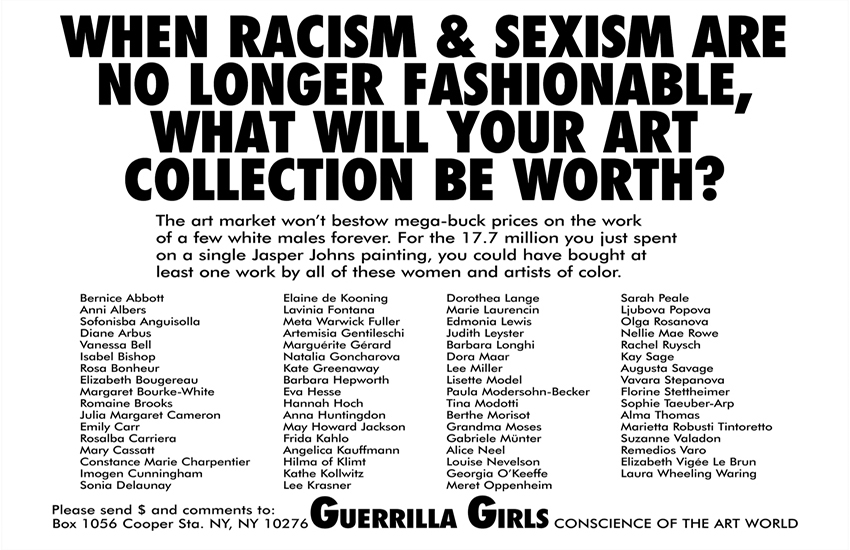

Sources Used:
Artist Legacy and Biography
Information regarding the groups originOfficial Site
Includes booking info and activist work as well as original artworkInterview
An interview, as well as the groups first published novelInformative Wikipedia Page
Details nearly everything the group has been involved withVideo Interview With TateShots
Provides context to what the women behind the masks stand for
